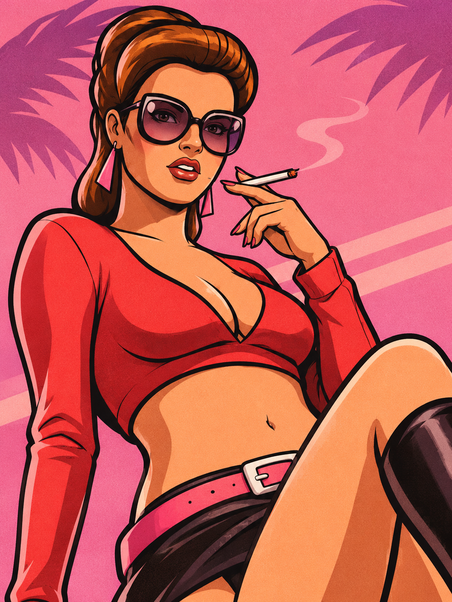

À LA UNE
GRATUIT · NON OFFICIEL · ALPHA PRÉCOCE
Le même Vice City.
De nouvelles possibilités.
Grand Theft Auto: Vice City Stories — portage PC natif
Découvrez Vice City Stories sur PC avec reVCS, un portage natif indépendant fondé sur reVC et librw. Utilisez vos propres fichiers du jeu PS2, installez-les avec reVCS Manager et suivez les progrès du projet.
Windows 10 / 11 (64 bits) · Votre exemplaire PS2 est requis

LE CHAPITRE ACTUELALPHA 0.55 / UPDATE 8.7VERSION AVEC BULLET PHYSICS
01 / LE PROJET
Vice City Stories,
reconstruit pour PC.
Les rues de vos souvenirs. Un projet Windows natif.
reVCS porte Grand Theft Auto: Vice City Stories sur Windows avec reVC et librw. Le projet reconstruit les systèmes de jeu propres à VCS et exécute les scripts PS2 d’origine dans une machine virtuelle SCM dédiée.
La version actuelle utilise Bullet Physics et comprend des exécutables natifs x86 et x64. Le projet reste en alpha précoce : gameplay, rendu, physique, compatibilité et performances évoluent à chaque mise à jour.
Versions de Manager et actualités du projet01
Un projet PC natif
Fondé sur reVC / librw, avec des exécutables Windows x86 et x64.
02
Votre jeu, converti
Vos fichiers PS2 fournissent les données originales du jeu. Aucune image disque n’est incluse.
03
Toujours en chantier
C’est une alpha. Des défauts subsistent : vos retours utiles contribuent aux prochaines mises à jour.
02 / VIDÉOS DE DÉVELOPPEMENT
Découvrez reVCS en action
Vice City Stories. En natif sur PC.
Explorez les séquences de jeu, les démonstrations et les progrès de reVCS, des premières présentations publiques aux dernières améliorations.

GTA Vice City Stories — Native PC Port (reVCS) | Development Showcase 2026
Regarder sur YouTube : GTA Vice City Stories — Native PC Port (reVCS) | Development Showcase 2026
reVCS — Progress Showcase & Goofing Around | GTA Vice City Stories on PC
Regarder sur YouTube : reVCS — Progress Showcase & Goofing Around | GTA Vice City Stories on PC
GTA Vice City stories - completely normal gameplay no commentary
Regarder sur YouTube : GTA Vice City stories - completely normal gameplay no commentaryToutes les vidéos sont hébergées sur YouTube. Si la lecture intégrée est indisponible, choisissez « Regarder sur YouTube ».
MOINS DE PRÉPARATIFS. PLUS DE VICE CITY.
Votre chemin
du retour.
Un seul outil pour installer, gérer les mises à jour, sauvegarder vos parties et lancer le jeu.
- Mode Quick pour l’essentiel
- Mode Extended pour plus de contrôle
- Paquets locaux et installation hors ligne
- Import facultatif de packs de textures PCSX2
L’APPLICATION WINDOWS 1.35.1

03 / DU DISQUE AU BUREAU
Trois étapes.
Vous voilà de retour.
- 01
Préparez votre exemplaire PS2.
Préparez votre propre ISO PS2 de Vice City Stories ou le dossier extrait du disque. Conservez sa structure intacte.
- 02
Laissez Manager s’en charger.
Extrayez l’archive ZIP de démarrage, lancez Manager et choisissez votre source ainsi qu’un dossier de destination vide. Les composants de conversion manquants sont téléchargés depuis GitHub.
- 03
Faites-en votre ville.
La conversion installe directement Update 8.6. Lancez la version x64 Direct3D 11 ou la version x86 Direct3D 9 de compatibilité. Réglez la résolution dans le jeu et gérez les packs PCSX2 en mode Extended.
Les fichiers source sont lus localement et restent inchangés. La compatibilité est vérifiée ressource par ressource ; un fichier de langue différent ne fait pas automatiquement rejeter tout le disque.
04 / VOTRE BILLET RETOUR
La ville
vous attend.
Téléchargez d’abord le petit kit de démarrage.
Manager télécharge les composants de conversion au besoin.
MANAGER 1.35.11 · ALPHA 0.55 UPDATE 8.6
reVCS Manager
Windows 10 / 11 · Installateur 64 bits
Quoi de neuf dans Update 8.6 ?
Mise à jour cumulative depuis la première installation publique Update 8 jusqu’à 8.5. Ajoute les menus natifs, le flou en pause, les icônes radio, le GPS des missions, D3D11 et des corrections des charges de l’hélicoptère. Notes de version.
Quoi de neuf dans Update 8.2 ?
Ajout des ralentis F1 ; amélioration des collisions sur les rampes, de l’accès au JetSki et de sa conduite, des vols scriptés et du nettoyage des modèles. Installation depuis la page Updates de Manager. Notes de version.
Quoi de neuf dans Update 8.1 ?
Corrige un échec de démarrage sous Proton causé par des espaces en fin de ligne dans les données d’apparition des PNJ. Dans Manager : Updates → Check game updates → Apply available game updates. Notes de version.
Quoi de neuf dans Manager 1.35.11 ?
Manager 1.35.11 corrige le choix DX11/DX9 et DXVK x86, sélectionne les composants compatibles malgré un ancien XML et supprime le blocage des mises à jour par détection de processus. Le retour arrière reste actif en cas d’erreur de fichier.
AVANT DE PRENDRE LA ROUTE
Quelques points
à connaître.
reVCS est-il gratuit ?
Oui. reVCS et son installateur sont distribués gratuitement. Vous devez fournir votre propre exemplaire de Grand Theft Auto: Vice City Stories sur PS2.
reVCS est-il un émulateur ?
Non. reVCS est un projet PC natif fondé sur reVC et librw. Il reconstruit les systèmes du jeu et utilise les données PS2 originales fournies par l’utilisateur.
Faut-il le jeu original ?
Oui. Fournissez votre propre ISO PS2 de Vice City Stories ou le dossier extrait du disque. Manager convertit ces fichiers localement. Ni ce site ni le kit de démarrage ne fournissent d’image disque PS2.
Quelles versions PS2 sont utilisables ?
Les tests de conversion couvrent les sources EU, US et une version modifiée en polonais. Une installation EU complète a été validée avec Setup 1.33 ; les sources US et polonaises ont passé les contrôles de conversion des ressources. Les autres disques sont vérifiés par ressource plutôt que par une liste fixe d’empreintes ISO. La conversion de tous les disques modifiés n’est pas garantie.
Peut-on installer sans connexion Internet ?
Oui. Téléchargez les 13 composants BIN, le ZIP de démarrage et version.xml de la même version. Extrayez le ZIP et placez les BIN à côté de Manager. Passez en mode hors ligne et choisissez votre source PS2 locale.
Comment mettre à jour le jeu et Manager ?
Manager recherche les mises à jour au démarrage et propose les siennes en premier. Le téléchargement et l’installation demandent confirmation. Vous pouvez aussi utiliser Welcome → Check Game Updates ou Check Manager Updates. Les vérifications au démarrage se désactivent dans Extended → Advanced ; les paquets hors ligne restent disponibles.
Les packs de textures sont-ils inclus ?
Non. Les textures de remplacement PCSX2 sont facultatives et fournies par l’utilisateur. Choisissez votre pack ZIP ou 7z compatible en mode Extended.
Le jeu est-il terminé ?
Non. reVCS est un projet de fans en alpha, activement développé. Il reste des limites connues et des tests communautaires en cours. Manager 1.35.11 améliore l’installateur et la mise à jour ; Update 8.6 pour le jeu est disponible séparément.
Que faut-il inclure dans un rapport de bug ?
Décrivez les étapes, les versions du jeu et de Manager, l’édition du disque source et le résultat attendu. Joignez le journal concerné et, si utile, une courte vidéo. Retirez les données personnelles des journaux avant de les partager.
Signaler un problème d’installationPAR LA COMMUNAUTÉ, POUR LA COMMUNAUTÉ
Une lettre d’amour à Vice City Stories.
reVCS est un projet de fans indépendant dirigé par DasIstEin20. Des agents de programmation IA et un assistant IA dans le navigateur contribuent à la recherche, à l’implémentation, aux outils et aux tests, en s’appuyant sur les outils, les connaissances et les retours de la communauté.
Rien de tout cela n’existerait sans les créateurs de Vice City Stories, ni sans les années de travail, la rétro-ingénierie patiente et les connaissances librement partagées par la communauté. Un immense merci à :
- Rockstar Games, Rockstar Leeds et Rockstar NorthPour Grand Theft Auto: Vice City Stories, le jeu que nous aimons et qui a inspiré ce projet communautaire.
- Les équipes et contributeurs de re3 / reVCPour les fondations GTA issues de la rétro-ingénierie qui ont rendu ce travail possible.
- aap et librw / librwgta / StoriesConv — contributeursPour le rendu, la compréhension des formats Stories et la conversion des données originales.
- GTA SA Reversed — contributeursPour les systèmes de San Andreas reconstruits et les recherches partagées sur le moteur.
- jessicanataliagta et PSPRecomp — contributeursPour la recompilation statique PSP et les recherches et références sur VCS.
- BlackLineInteractive et SHO-GTA-VCS-PS2Recomp — contributeursPour les recherches sur la recompilation PS2 et le projet de référence partagé Silent Hill Origins / GTA VCS.
- gothamor et GTA VCS Recomp — contributeursPour la recompilation PS2 de VCS et une référence précieuse sur le comportement du jeu original.
- OgstraPour le travail partagé sur la physique et le timing indépendant du nombre d’images par seconde.
- Bullet Physics — contributeursPour la bibliothèque physique utilisée dans cette version.
- Sanny Builder — communautéPour la documentation et les recherches partagées sur les scripts.
- PCSX2 — contributeursPour les recherches PS2 et les outils de textures au service de la communauté.
- OpenAL Soft et Zstandard — contributeursPour les bibliothèques audio et de compression utilisées par le projet.
- Moddeurs, spécialistes de la rétro-ingénierie, créateurs de textures, testeurs et joueursPour les découvertes partagées, les rapports de bugs et pour faire vivre Vice City Stories.
« À la communauté du modding et de la rétro-ingénierie GTA : sans votre travail, les outils que vous créez et les connaissances que vous partagez, reVCS ne serait pas possible. Merci du fond du cœur. ❤️ »